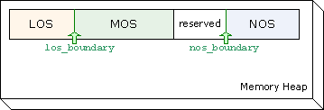
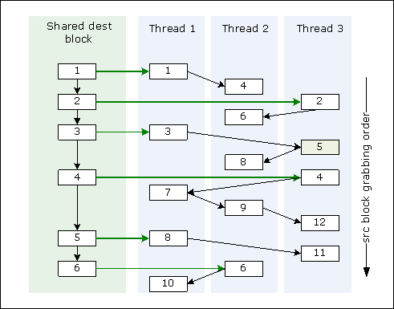
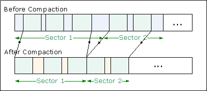
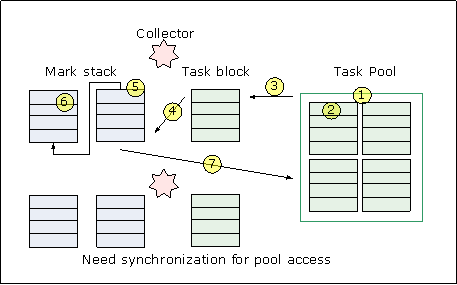

| Version | Version Information | Date |
|---|---|---|
| Initial version | Nadya Morozova, Xiao Feng Li: document created. | January 2008 |
This document introduces the generational garbage collector (a.k.a GC version 5, GCv5) component delivered as part of the DRL (Dynamic Runtime Layer) initiative. This document focuses on the specifics of the current implementation showing the garbage collector role inside the DRL virtual machine, and the internal organization of the garbage collection subsystem. This document uses the unified conventions for the DRL documentation kit.
The target audience for the document includes a wide community of engineers interested in further work with garbage collecting technology to contribute to its development. The document assumes that readers are familiar with DRLVM architecture basics, garbage collection methodologies and structures.
This document uses the unified conventions for the DRL documentation kit.
The document uses a number of key terms related to memory management, as follows:
Usually, a runtime system has a memory manager for all memory-related functionality, and the memory manager can host multiple garbage collectors on top of it. The current Harmony DRL virtual machine has no separate memory manager module (under design), and two functional garbage collector modules. GCv5 is current Harmony default GC. This document describes GCv5 only.
So far, Harmony DRLVM has delivered three independent stop-the-world garbage collectors:
Two more completely new collectors are under development. Working parts of their code are already in Apache Harmony code base.
GCv5 possesses the following key features:
In GCv5, all spaces are inherited from a common Space class. Blocked space is
a space type Blocked_Space where the space is arranged in fixed-size blocks. Another
derived structure of Space is Lspace, which consists of alternate-sized blocks.
Currently, the space is continuous and the blocked space assumes the blocks are
contiguous. In future, this assumption may be removed.
Division of the heap into spaces relies on the size of allocated objects: normal objects are of size equal to or smaller than a threshold (called the large object size threshold), and large objects are of size greater than the threshold. Based on that, the default GCv5 configuration partitions the heap space into three basic parts:
The boundaries between the spaces are automatically adjustable by GC according to the space, utilizations; see Figure 1.

Adaptation of the garbage collection process at run time is essential for good GC performance. GCv5 supports the following runtime automatic adaptations:
The minor collection is significantly faster than the major collection, but the major collection frees more space. GCv5 switches between the two kinds of collections with a throughput-driven heuristic algorithm. Roughly speaking, a major collection will be triggered when MOS is approximately half-filled.
Note
Users can specify the major collection type in command line, so that all collections are full-heap collections.
In the non-generational mode, a minor collection traces the entire heap from the root set for live-object marking, and in the generational mode, only NOS is traced from both remember set and root set. In the latter case, the GC does not trace the whole heap, but can retain lots of floating garbage. GCv5 can dynamically switch between generational and non-generational modes so as to leverage both advantages.
Note
This adaptation is turned off by default because the performance depends on the workload's behavior.
Based on the survive ratios and allocation speeds of the spaces, GCv5 reserves
only adequate MOS free space for the NOS minor collection, and tries to get MOS
and LOS equally full when a major collection happens. In other words, GC adjusts
nos_boundary after each collection, and los_boundary after a major collection,
if necessary.
Note
If the MOS reserve space is not enough to hold NOS-survived objects, the fall-back compaction happens.
The JVM specification does not govern reference representation and leaves this to the VM implementation. You can have 32-bit or 64-bit or hybrid reference representations considering the cost-efficiency in space and time. For generic information on object references, including compressed references for 64-bit platform support, please refer to the developer's guide.
GCv5 defines the REF type for an object reference, and does not take into account
the layout or physical meaning of a REF value. When the collector accesses a reference,
it always calls ref_to_obj_ptr() to convert the REF value to a real address pointer.
Conversely, the collector needs to call obj_ptr_to_ref() to encode an address into
a reference. The encoding rule is set by the implementation of this function depending
on the platform: on a 32-bit platform, this function can return the same value
untouched, and on a 64-bit platform, it can use the �compressed reference� technique
to encode/decode REF into an object pointer.
A "compressed reference" is a form of object reference representation, where the runtime environment uses a 32-bit value for object reference representation. The real address is the sum of the 32-bit value and a heap base address value, and the compressed value of this heap base address is zero. To distinguish this zero value from the NULL reference, the GC avoids having the zero value by setting the heap base address several bytes lower than the real heap start address.
All reference fields are encoded in the 32-bit compressed mode, and we also use
32-bit compressed mode to encode the vtable field in the object header. Because
the obj_info field is kept 32-bit on both platforms, the total object header overhead
remains two 32-bit words (or one 64-bit word).
The GC v5 source tree under the working_vm/vm/gc_gen main directory has the following
structure:
src - the GCv5 implementation main body written in pure C language; consists
of C source and header files using .cpp suffices. These files have not been tested
with a C compiler. common - common GC routines and definitions; trace_forward - copying collection algorithms;mark_compaction - compacting collection algorithms; los - the mark-sweep collection only for large objects;mark_sweep - the mark-sweep collection algorithm for both normal and large
objects, which is under development and not included in the GCv5 default setting;thread - threading functionalities, including mutator and collector; utils - common data structures or routines, not specific for GC; gen - generational collection control; finalizer_weakref - GC support for finalizer and weak references;verify - correctness verification routines for memory management operations; jni - support routines for GC Java* helpers in the javasrc directory; javasrc - the Java* source code used by JIT to inline the fast path of frequent
GC operationsNote
Because inlining of GC helpers is only conducted for the server mode of Harmony, the javasrc directory can be skipped initially by GC developers, and more explanation will be given later.
The source tree structure may change according to changes in a collector kit framework.
GCv5 has 2 types of allocation: mutator allocation for the needs of mutator threads, and collector allocation only for trace-forward algorithm during collection.
According to the requested size, memory is allocated in different spaces. If the object is larger than the large object size threshold, it is allocated in LOS; otherwise, it is called a normal size object and is allocated in NOS.
For higher parallelism and better locality, each mutator is associated with a local block of space. If the requested object is a normal size object, it is allocated in this local block directly. When spaces in the local block runs out, the mutator gets the next free block in NOS.
During minor collections, live objects in NOS are copied to MOS. Allocation in MOS uses the same interface as allocation in NOS, except that the large object threshold is not checked.
In tracing garbage collection, a root is a reference to an object that is a priori reachable. Roots basically comprise the references in the state of the mutator. Typical roots are global variables, other static data, and the control stack. The root set is the collection of roots when GC is invoked. The root set is used as the starting point in determining all reachable data. The enumeration process is to gather all roots into the root set.
In DRLVM, the enumeration process is a part of VM core rather than of a GC, and is identical for all collectors.
Before root set enumeration, the mutator, which invokes GC, tries to suspend all mutators one by one expect itself. Only when a mutator is suspended, its state is invariable and thus ready for root set enumeration and subsequent garbage collection. After all mutators are suspended, the mutator, which invokes GC, finds all roots of each mutator and all global variables to compose the root set.
GCv5 has two types of garbage collections:
The minor collection is expected to produce a better throughput (relation of the free memory space to GC time), because it only collects NOS, and objects in NOS tend to become unused sooner than those in MOS, which are copied from NOS in minor collections. This way, the minor collection takes significantly less time than the major collection and is invoked in most GC cases. Only when the throughput of the minor collection is equal to that of the major collection, or when MOS has run out of free space, a major collection is invoked.
Based on whether MOS and LOS are traced, the minor collection has two modes, which can be specified on the command line or adapted at run time.
The hybrid mode results in better performance than either generational or non-generational mode. The real performance depends on workloads.
GCv5 uses two compaction algorithms in the major collection: the parallel LISP2-based sliding compactor and the two-pass parallel move-compactor.
This compactor is composed of three main phases:
During the compaction process, each space block can act as the source from which data is copied, and as the destination block where live data is copied to. The key idea is that a list of source blocks is created for each destination block during phase 1, and then each thread picks a source block from the list of blocks for this destination block to copy live data from the source to the destination.
All the phases can be executed by multiple threads in parallel, as long as there is a barrier between two phases.
It is proved that when an area in the destination block is acting as the destination area, live objects in it must have been copied in phase 3. This guarantees that the data unread by one thread cannot be overwritten by another thread.
The following figure shows how collector threads compact live objects from source blocks into destination blocks in phase 3.
Figure 2: Collector threads compacting live objects

The parallel-move compactor has fewer passes than the parallel sliding compactor. Its key idea is based on the parallel compaction algorithm defined at [3], but the parallelization scheme in GCv5 is different, and free spaces between live objects in a sector are not compacted.
This compactor is composed of two main phases:
The following figure shows how the move-compactor works.
Figure 3: Move Compactor

Currently, GCv5 uses parallel-move compactor and parallel sliding compactor for respective collection scenarios.
Before mutators run at the beginning of each GC cycle, a part of the continuous free area in MOS and NOS is reserved for the free MOS area, and the rest is NOS. Because the survive ratio of NOS in the next minor collection is unpredictable, the free MOS area might be smaller than needed. In this case, MOS cannot accommodate all live objects in NOS in the next minor collection, and the GC stops the minor collection and launches a major collection, which is called fallback in GCv5.
For better modularity of GCv5, the fallback mechanism could be straightforward: when collectors find that a fallback is needed, they give up the minor collection and return to the main GC process. The GC launches a major collection and re-activates the collectors. However, this kind of major collection is a little different from the usual major collection, because some objects in NOS are copied into MOS and some references pointing to them are not updated in the minor collection. The solution is to update those stale references in the marking phase of the major collection. Except for this, other collection phases are identical to the normal major collection.
GCv5 uses the pool-sharing algorithm to achieve parallel load balance for marking and forwarding.
Figure 4: Pool Sharing

As the above figure shows, the task pool serves for the shared pool of task blocks. Each task block is an array of references. Getting a task block from the pool or putting it there is a synchronized operation. And one reference stands for one task.
While marking, a collector grabs a task block from the pool and takes references one by one from the task block for tracing in the depth-first order. Child nodes in the tracing tree are put to a local mark stack. When the mark stack is full, the collector puts the full mark stack into the task pool as a task block, and gets another empty stack to hold the child nodes. If the local stack is empty, the collector takes another task from the task block. If all references in the task block are traced, collector grabs another task block from the task pool to trace. When the task pool is empty, tracing is done.
For a definition of the finalization system, please see the developer's guide. The GCv5 finalizer subsystem includes support for weak references. Because the finalizer and the weak reference are similar and closely related, they can be related to as the finref subsystem interchangeably with the finalizer subsystem.
The finalization process includes the following major activities:
finalize() method of
those objects. This is conducted in the finalizer thread context, and is the
same for all GCs. If a mutator keeps producing objects with finalizer, and the finalizers are not able to be executed on time, the dead objects waiting for being finalized will consume the heap space, and an out-of-memory exception occurs. Harmony produces 2 solutions:
GCv4.1 adopts the first solution, and GCv5 adopts the second solution.
This section describes the interface that the generational garbage collector exports to communicate with other components. GCv5 exposes the standardized interface to enable pluggability and covers all necessary interfaces to work as a part of the run-time environment.
[1] H.B. M. Jonkers. A fast garbage compaction algorithm. Information Processing Letters, July 1979
[2] F. L. Morris. A time- and space-efficient garbage compaction algorithm. Communications of the ACM, 21(8):662-5 1978
[3] Diab Abuaiadh, Yoav Ossia, Erez Petrank, and Uri Silbershtein. An Efficient Parallel Heap Compaction Algorithm. ACM Conference on Object-Oriented Programming, Systems, Languages, and Applications (OOPSLA'04), October 2004.
[4] Donald E. Knut, Art of Computer Programming, Volume 1: Fundamental Algorithms (3rd Edition), section 2.3.5